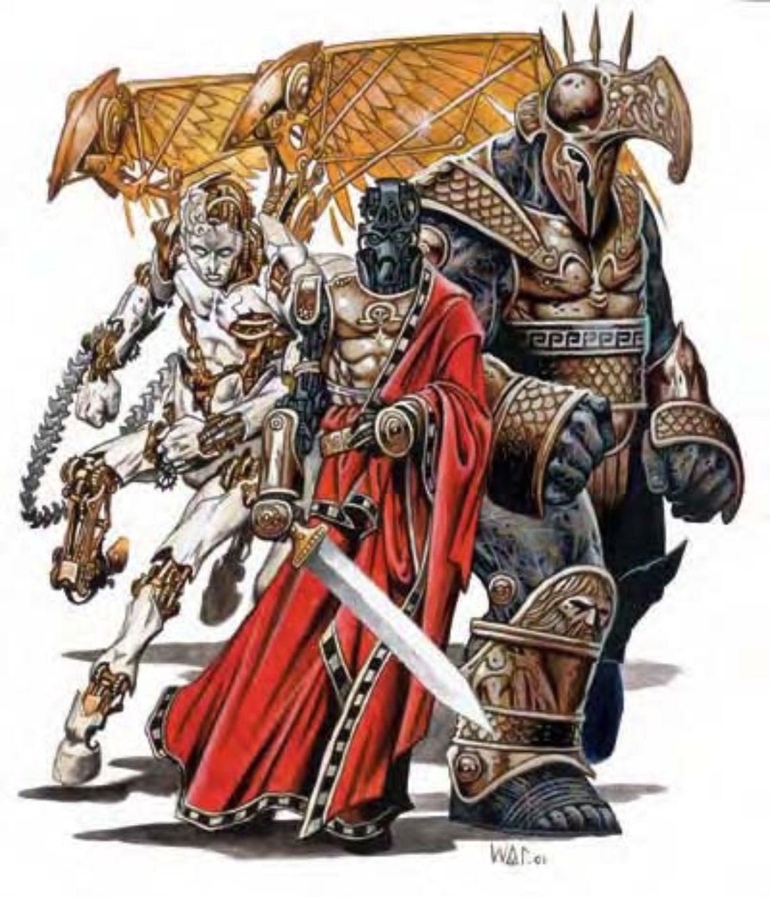

这种机械生物的外观看起来像人马。在他白润光滑的皮肤外穿着金色有纹饰的盔甲，他没有携带武器或其他装备。
猎不义使的职责是猎捕否定正义的人，尤其是那些逃避惩罚的罪犯。不论逃犯躲到哪里，这些追踪专家都会运用天生技能与魔法把他们找出来。
一开始猎不义使看起来没有威胁性，进入战斗时他们会从前臂弹射出两条刺链，此为即时动作。同样地他们也可用即时动作让一对金色机械翅膀从背上伸出。收回刺链或翅膀也是即时动作。
| 资料栏位 | 猎不义使 (Zelekhut) 大型构装生物 (外界、守序) |
| 生命骰 | 8d10+30 (74HP) |
| 先攻 | +0 |
| 速度 | 穿着座骑铠甲时35英尺 (7格)、飞行40英尺 (普通，8格)；基本速度50英尺，飞行60英尺 (普通) |
| 防御等级 | 27 (-1体型、+10天生、+8座骑铠甲)、接触9、措手不及27 |
| 基本攻击/擒抱 | +6 / +15 |
| 攻击 | 刺链+10近战 (2d6+5附加1d6电击) |
| 全力攻击 | 2刺链+10近战 (2d6+5附加1d6电击) |
| 占据/触及 | 10英尺 / 10英尺 |
| 特殊攻击 | 类法术能力 |
| 特殊能力 | 构装特性、伤害减免10 / 混乱、黑暗视觉60英尺、快速医疗5、昏暗视觉、法术抗力20 |
| 豁免 | 强韧+4、反射+2、意志+5 |
| 属性 | 力量21、敏捷11、体质―、智力10、感知17、魅力15 |
| 技能 | 交涉+4、聆听+9、搜索+9、察言观色+12、侦察+9、生存+3 (追踪+5) |
| 专长 | 强韧加强、快速骑乘攻击、奋力冲刺 |
| 环境 | 机械规律界 |
| 组织 | 单独 |
| 宝藏 | 无 |
| 阵营 | 总是守序中立 |
| 进化 | 9-16HD (大型)；17-24HD (超大型) |
| 等级修正值 | ― |
一旦发现逃犯，猎不义使会利用其速度与类法术能力挡住可能的逃跑路径。接着为了保护无辜的旁观者，他们会让他无法动弹，最后再用刺链捕捉逃犯，必要时也会用来阻绊或卸除敌人的武器。即使是死刑，猎不义使也会不慌不忙地冷静执行。
在计算伤害减免时，猎不义使的天生武器与持有武器都视为守序阵营。
类法术能力：随意施展――“锐耳术 / 鹰眼术”、“次元锚”、“解除魔法”、“恐惧术” (DC=16)、“人类定身术” (DC=15)、“生物定位术”、“真实目光”；每天3次――“怪物定身术” (DC=17)、“正义烙印”；每周1次――“次级指使术” (DC=16)。施法者等级8。豁免检定DC的调整值与魅力调整值相同。
技能：猎不义使在进行“搜索”与“察言观色”检定时具有+4种族加值。
专长：由于猎不义使是人马型构装生物，选择技能时可视为已经拥有“骑乘战斗”专长。